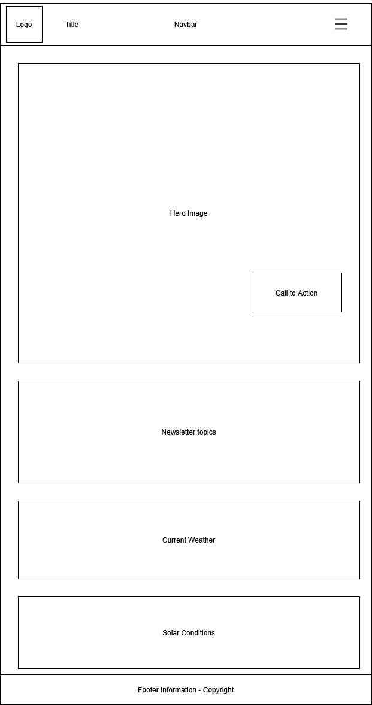
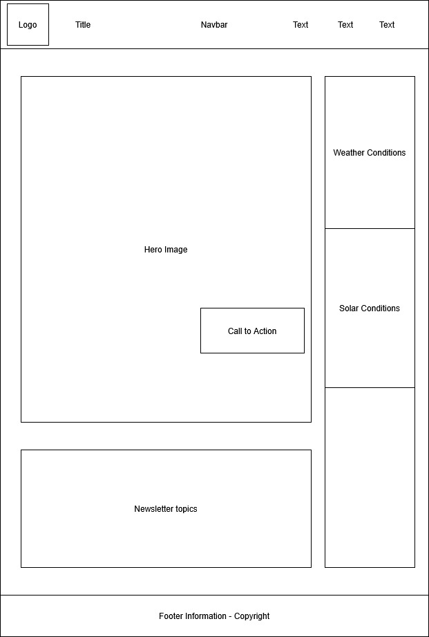

Rivertown Amateur Radio Club
The name reflects both the geographical identity of our club's location, Rivertown, and our shared interest in amateur (ham) radio. It’s clear, easy to remember, and targets both local hobbyists and those looking for a welcoming ham radio community.
Optional domain availability: rivertownradio.org
Logo: Will feature a stylized antenna tower and radio waves over a river silhouette (to be designed).
This site will serve as an online hub for the Rivertown Amateur Radio Club. It will feature club news, events (like field days and emergency drills), licensing resources for newcomers, and contact info for joining the club or reaching leadership. The site will also share live repeater frequencies and nets info for active operators as well as broadcasting conditions.
Mobile View:
Desktop View:
